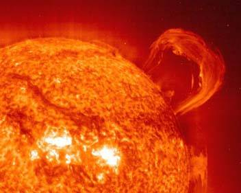

О проекте
Основные сведения о Солнечной системе
Планеты
Солнечной системы
Остальные космические тела Солнечной системы
Солнце
Виртуальный тур по вселенной
Законы Кеплера - законы движения планет
Вселенная. А что дальше?
Вместо заключения
Ссылки
|
Солнце - это чудовищных размеров атомная "печь". Причем температура
по мере приближения к ядру возрастает приблизительно с 6000 градусов
до 15 миллионов градусов. Это необходимые условия для термоядерных
реакций, в результате которых выделяется столь необходимая Земле
энергия, без которой на нашей планете и в помине не было бы жизни.

Говоря о строении Солнца, надо заметить, что огромная масса газа
сконцентрировалась в определенном месте Вселенной. Итак, Солнце примерно
на 72% состоит из водорода, остальную же часть занимает гелий. Сами по себе
эти газы довольно легкие, но принимая в расчет то, что Солнце весит
примерно столько же, сколько бы весили примерно 330 тысяч наших планет.
Следовательно, концентрация газов огромна.
Внешние частицы газа оказывают огромное давление на частицы внутренние.
Но почему-то Солнце сохраняет все же свою форму. Почему?
Для этого надо рассмотреть внешнюю газовую оболочку нашего светила. О
ней можно сказать, что она разрежена, ее толщина - не более 100 километров.
При этом оболочка давит с огромной силой на лежащие под ней слои. Анализируя
данные, можно заявлять, что присутствует некоторая сила, уравновешивающая
это давление.
Горячий газ стремится расшириться; чем он горячее, тем больше стремится он
к расширению. Ученые-астрофизики полагают, что по направлению к ядру Солнца
температура слоев возрастает, что связано прежде всего с тем, что лежащий
ближе к ядру слой должен выдерживать давление предыдущих слоев. Постепенно
считая, можно дойти и до значения температуры ядра Солнца.
Но возникает вопрос: как же Солнце не охлаждется? Как поддерживает
такую гигинтскую температуру?
Известно, что на протяжении последних 5 млрд лет не изменились в сущности
ни мощность излучения Солнца, ни его размер. Но как температура ядра остается
постоянной?
Такое возможно только в том случае, если у Солнца внутри присутствует
атомная "печка", котрая постоянно вырабатывает энергию. Дальше энергия
проходит все остальные слои Солнца и потом излучается в космическое
пространство.
Что же является источником колоссальной энергии Солнца? Оказывается,
при огромных температурах в солнечных недрах происходит так называемое
слияние ядер в более тяжелые. В результате этой термоядерной реакции
водород превращается в гелий и выделяется огромное количество энергии.
Итак, единственное место в Солнечной системе, где ядра сливаются "мирно",
- это Солнце, поистине великое изобретение природы. Энергия при выходе
в космическое пространство излучается в виде света.
Нам же достается лишь малая часть энергии Солнца, но и ее достаточно
для согревания нашей планеты и поддержания на ней жизни, давая Земле
свет и тепло.
Завершая разговор о Солнце, скажем: сейчас Солнце - обычная звезда.
Но через 5 млрд лет оно невероятно увеличится и уничтожит всю жизнь на Земле.
Затем он сожмется и превратится в белого карлика. Но те, кто будет
читать этот материал, вряд ли доживут до этого момента. Хотя как знать -
может быть, мы будем бессмертны в будущем?
|